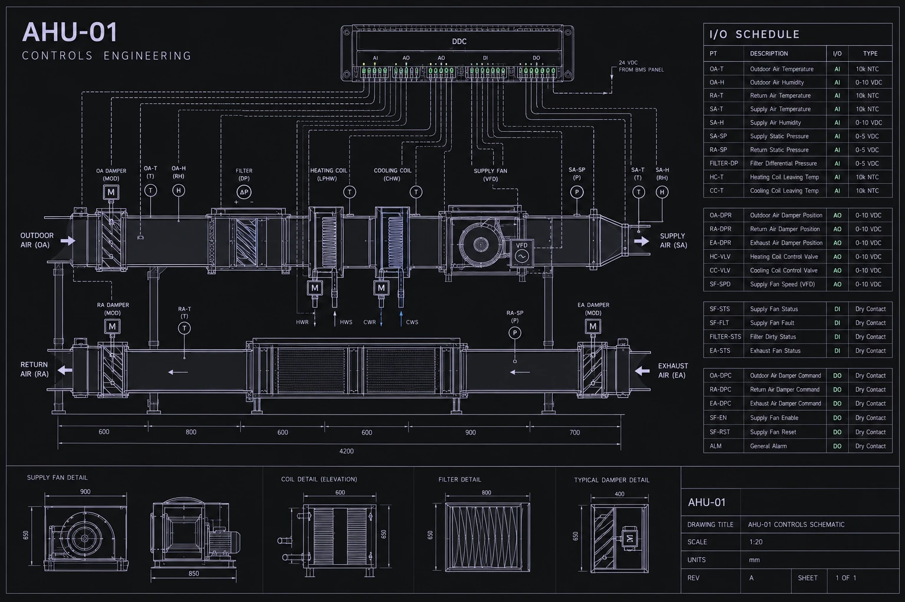
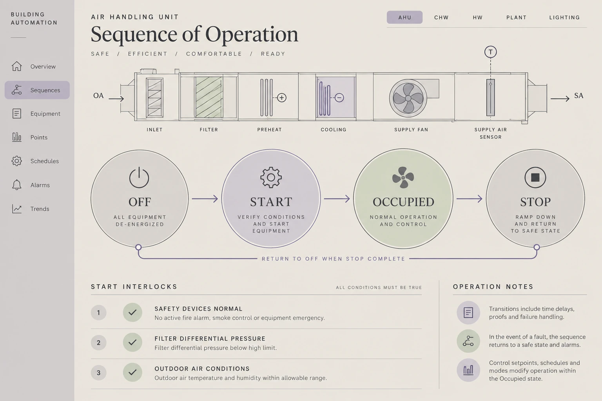
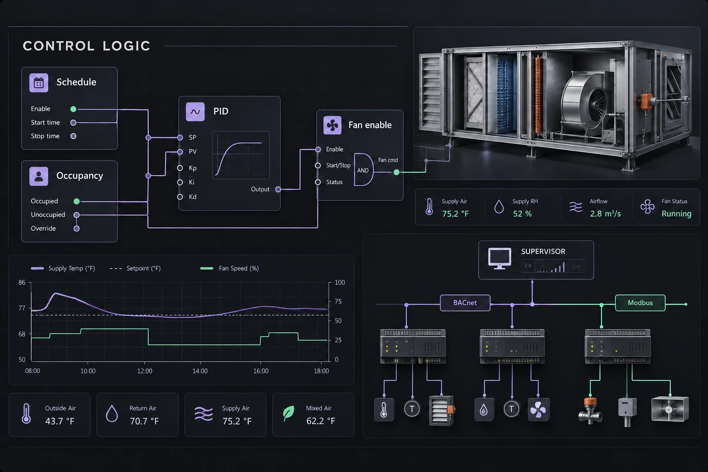
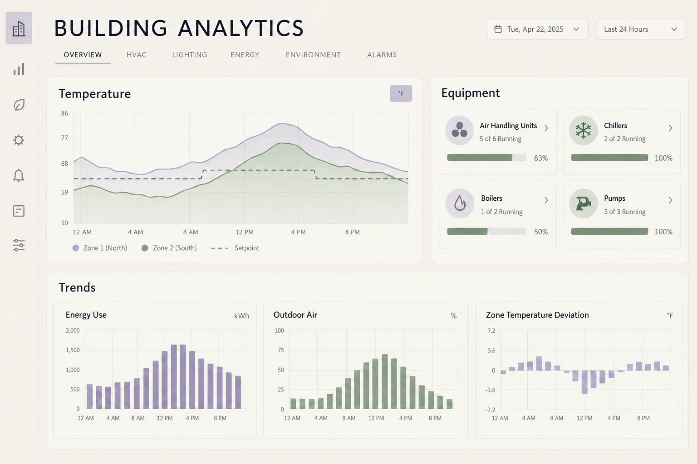
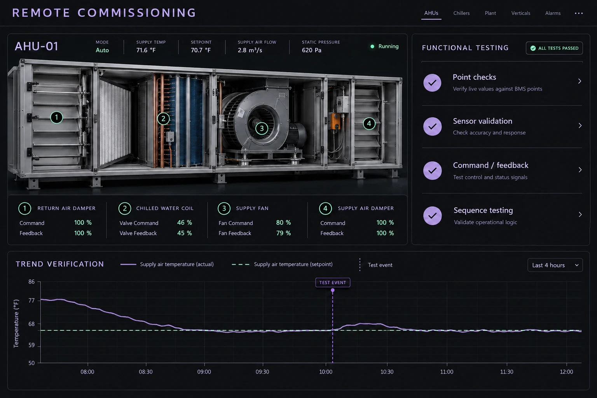
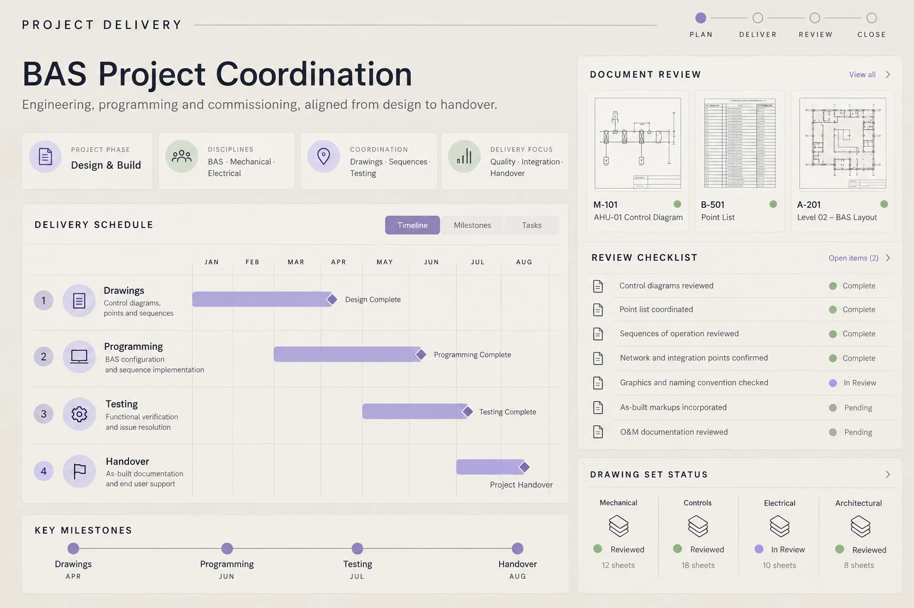
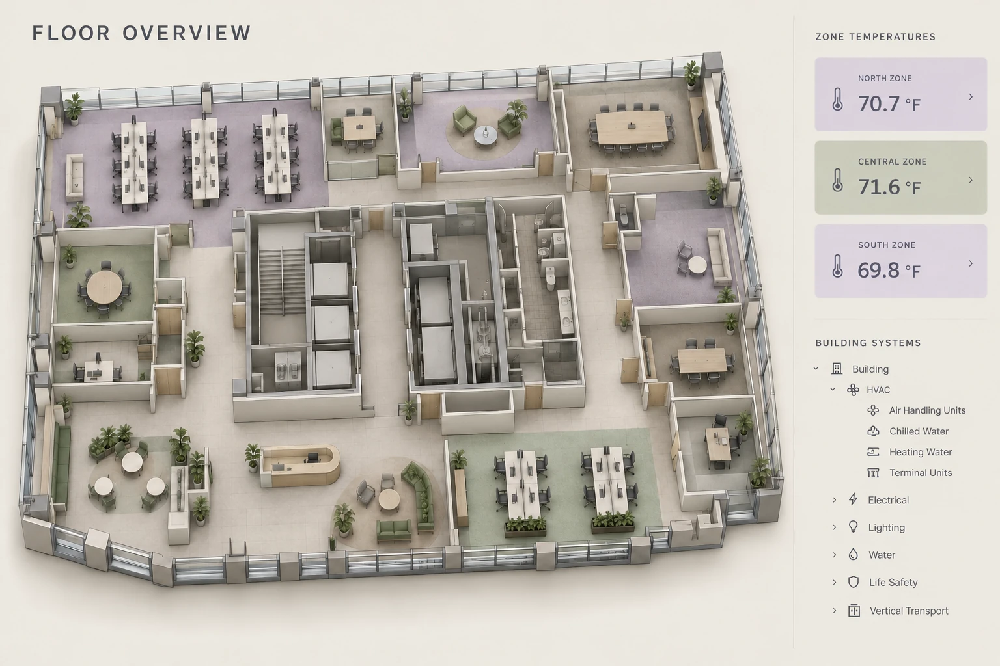
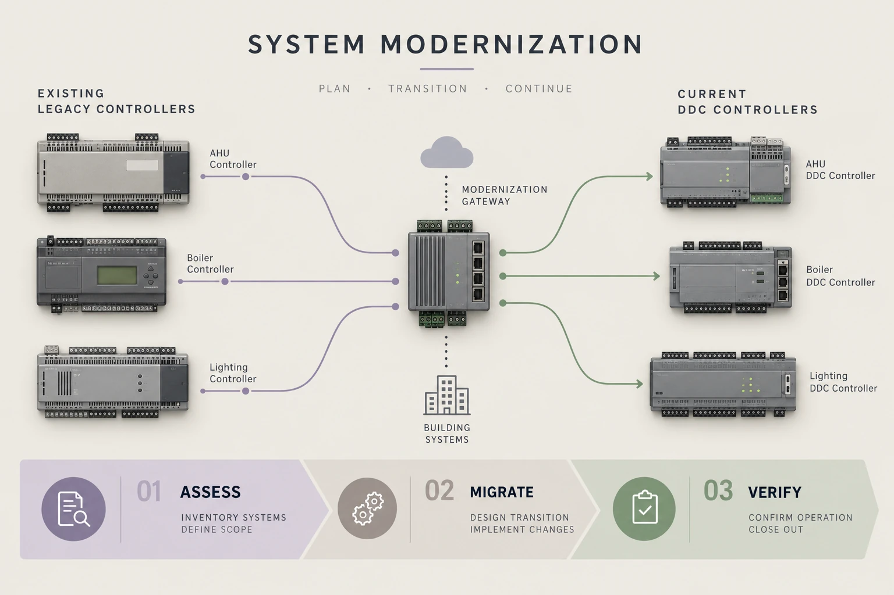
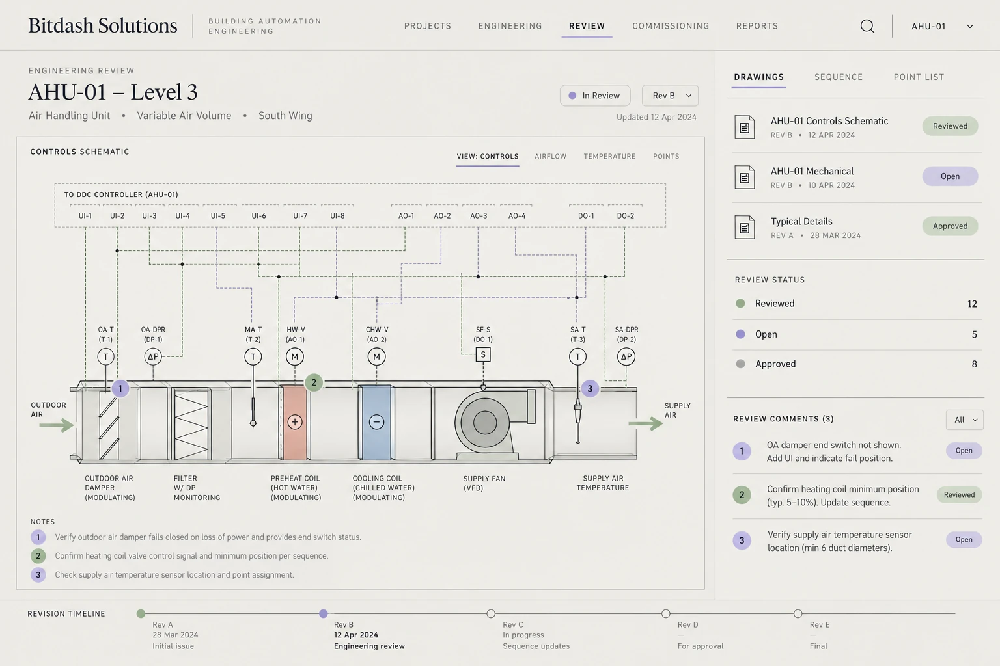

See what’s possible.
Explore executed graphics and project films, alongside illustrative engineering concepts for our wider services.
ILLUSTRATIVE MOCKUPS — these views explain our service capabilities; they are not client project records.

ENGINEERING CONCEPTAir-side systems
Controls schematics, field devices and point schedules
Explore controls engineering ↗
ENGINEERING CONCEPTNormal operation
Operating modes and their relationship to programmed logic
Explore sequences of operation ↗
ENGINEERING CONCEPTDDC applications
Control logic, point integration and supervisory structure
Explore programming integration ↗
ENGINEERING CONCEPTEquipment behavior
Trend evidence and equipment context for performance review
Explore analytics optimization ↗
ENGINEERING CONCEPTPoint verification
Functional checks, trend evidence and organized handover
Explore remote commissioning ↗
ENGINEERING CONCEPTPreconstruction
Engineering milestones, review decisions and coordinated release
Explore project management support ↗
ENGINEERING CONCEPTBuilding & floor views
Building navigation and equipment views designed for operators
Explore graphics visualization ↗
ENGINEERING CONCEPTExisting-system assessment
Legacy-system review and phased migration planning
Explore lifecycle modernization ↗BMS graphics, floor plans and dashboards


The work.
Beyond the interface.
Explore our executed project videos across
BMS, HMI graphics, Ignition SCADA, and
electrical power monitoring.
The engineering behind
the interface.
Our service scope can connect drawings, sequences, programming, operator graphics and remote verification. Explore the work package that fits your project.
Explore engineering services ↗